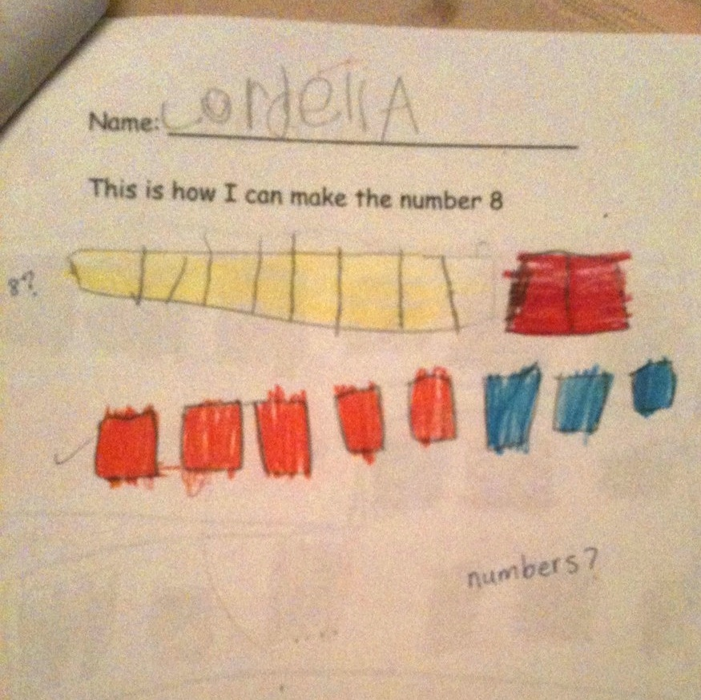
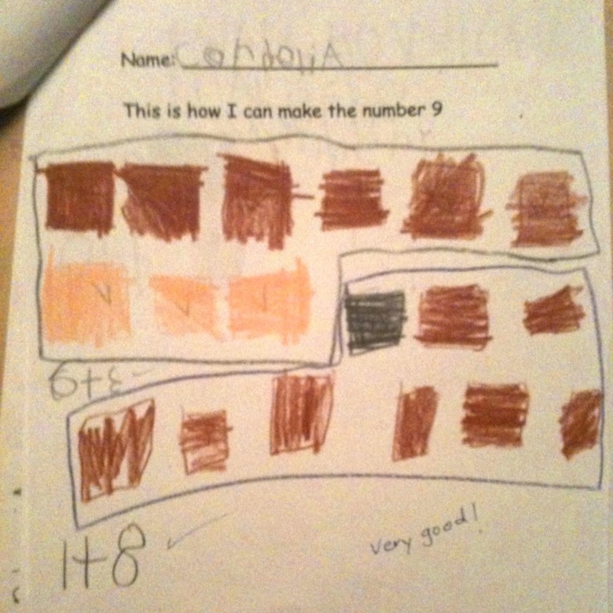
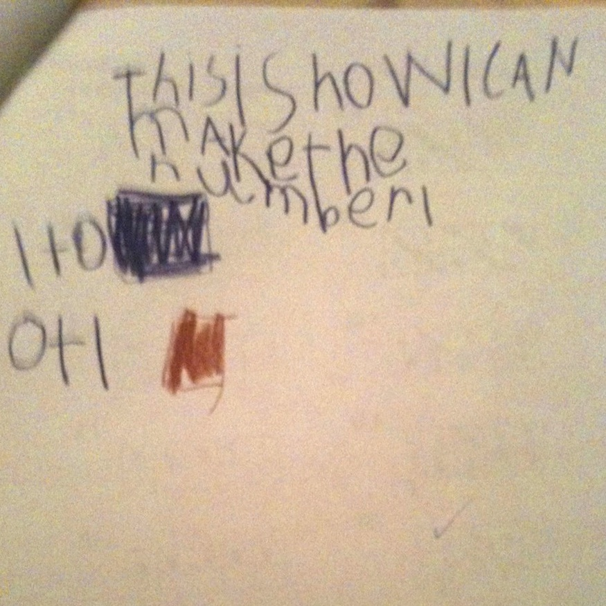
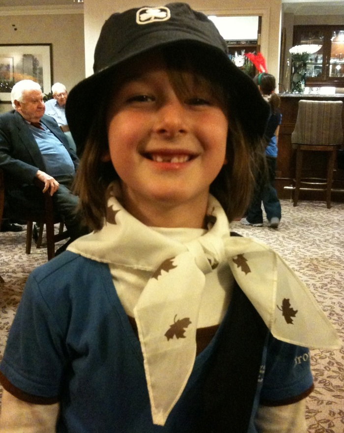

Cordelia Does Math
Lately Cordelia and I have been going through the folder of completed work her teacher sent home at the end of grade one. (She's four months into grade two at the moment; one day I hope to catch up.)
One of the exercises they did last year was to figure out how you can "make" particular numbers; that is, what two numbers add up to a number.
It took her a little while to catch on:

2 + 5 makes 7. A red dancing yeti + 2 purple eggs makes 7?

8 + 2 makes... damn. Okay, 5 + 3 makes 8.

Ah, now she's got it. 6 + 3 makes 9; 1 + 8 makes 9!
Now it's time for her to do it by herself: choose a number and show how to "make" it two different ways. But Cordelia is Blake's daughter, so her additional challenge is to do that correctly while also doing as little work as possible. I think she nailed it:

And here she is, this year:
